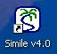

<< Previous Step
Next Step >>
Starting Simile

You start Simile by double-clicking on the desktop icon created
during installation, or by clicking on the Simile icon in the Start Menu.
These are both shortcuts to the file <Simile Program Files>\System\bin\Simile.exe,
where <Simile Program Files> is
the directory you chose to install the program.
By default, this is commonly “C:\Program Files\Simile40”, though if you
are using a network, it may be on a remote hard drive. If you would like to be able to start Simile
from a different location, create a shortcut to this file.
Within a few seconds, the main window will
be displayed.
The Main Window
When Simile starts, you see a single
window. This contains:
- a menu bar, containing a standard File menu, some menus
specific to Simile, and a Help menu.
Hold the mouse over the title for each menu to see the options it
contains.
- a toolbar, extending over two rows. The top row has standard tools (e.g. for
opening and closing files), plus some specific to Simile.
- a component bar, containing buttons corresponding to each type
of model-diagram element: you will use these for building up your model diagram. The right-hand part contains buttons for
editing the model diagram. Hold the
mouse over each button to get a brief description of its function.
- an equation bar, for entering equations into the model. At the right-hand end of the equation
bar are the tools to accept or reject changes to equations, and to help
build equations.
- a big blank area (the “desktop canvas”) with faint lines. This is where you will draw your model
diagram. The grid can help you
arrange your diagram neatly.
<< Previous Step
Next Step >>